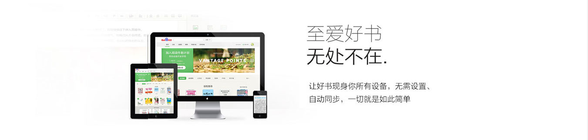
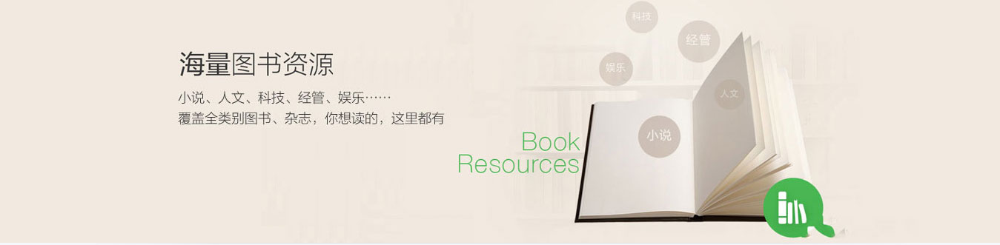
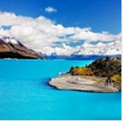

  编者推荐 新西兰岛屿湾旅行攻略 新西兰岛屿湾旅行攻略 新西兰岛屿湾旅行攻略 新西兰岛屿湾旅行攻略 新西兰岛屿湾旅行攻略 新西兰岛屿湾旅行攻略 新西兰岛屿湾旅行攻略 新西兰岛屿湾旅行攻略 新西兰岛屿湾旅行攻略 新西兰岛屿湾旅行攻略 最新上架 2018-6-9[历史]新西兰岛屿湾旅行攻略 2018-6-9[历史]新西兰岛屿湾旅行攻略 2018-6-9[历史]新西兰岛屿湾旅行攻略 2018-6-9[历史]新西兰岛屿湾旅行攻略 2018-6-9[历史]新西兰岛屿湾旅行攻略 2018-6-9[历史]新西兰岛屿湾旅行攻略 2018-6-9[历史]新西兰岛屿湾旅行攻略 2018-6-9[历史]新西兰岛屿湾旅行攻略 2018-6-9[历史]新西兰岛屿湾旅行攻略 2018-6-9[历史]新西兰岛屿湾旅行攻略